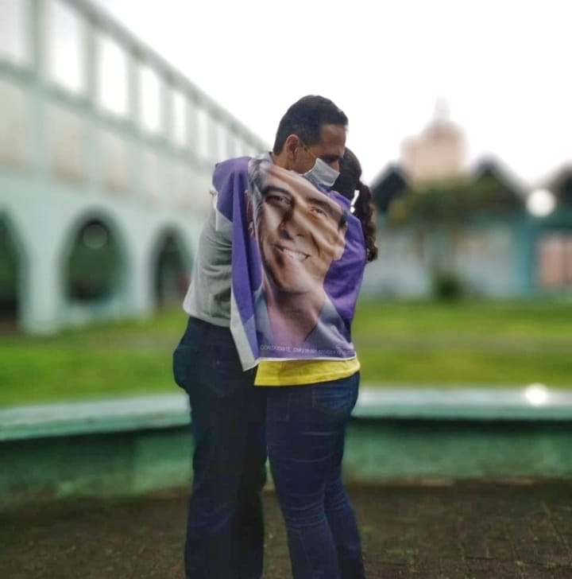

Virtue
The Strenght of The Soul
"Do not suppose, because it has been spoken concerning restoration, that ye shall be restored from sin to happiness.
Behold, I say unto you, wickedness never was happiness.'
" The Book of Mormon: Alma 41:10

For those who don't know, virtue is the same as strength, but many people think virtue is a word used by religions to make people fear God so they can be controlled, but actually, virtue is not about being controlled by someone else; virtue is 100% about self-control. The world today tells us we have to do anything we want, anything that "makes us happy," but happiness is not in giving into temptation or to our natural desires; happiness is about self-control, for the one who cannot control himself or herself is fated to end with no control of his or her own fate.